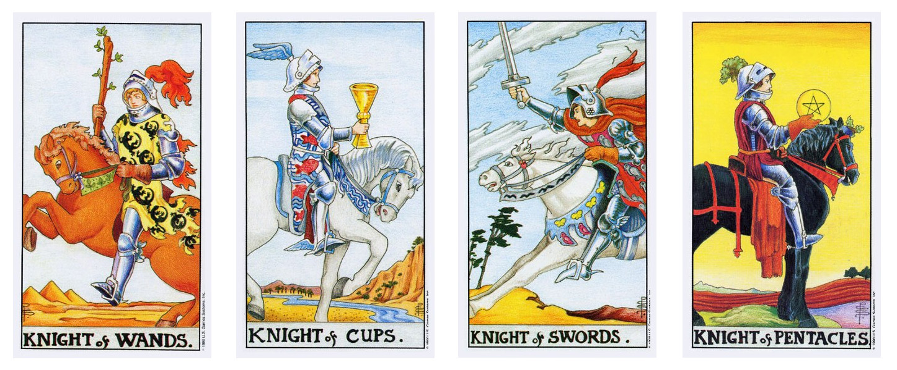

Пажи в раскладе приносят результаты перемен. Когда мы прочитаем расклад, нам станет очевидно, произошла перемена или только должна произойти.
Если нет, тогда положение пажа в раскладе покажет, посеяно ли семя перемен и когда эта перемена скорее всего произойдёт в тех случаях, когда:
● паж следует за Десяткой
● Десятка представляет Смену Уровня
● Паж приводит семя к тому, что из него вырастет
● Или показывает что Семя уже посеяно в результате Перемены Уровня, которую осуществляет Десятка.
Паж является вестником новостей, которые обещают перемену в жизни Клиента
● Молодой человек, ребенок
● Указ, что значительное и знаменательное событие вот-вот изменит жизнь Клиента
● Расположение в раскладе укажет когда
● Какого рода событие и как повлияет – укажет масть:
Паж жезлов: явная возможность нового развития событий на работе или в бизнесе, инфо по раскладу покажет положительное это явление или отрицательное.
Паж кубков: после получения информации от этого пажа Клиент отреагирует эмоционально. Какое сообщение, хорошее или плохое, смотрим по раскладу.
Паж мечей: это быстрые вибрации, которые потребуют от клиента быстрых решений и заставят его действовать соответственно. Эти действия необязательно будут от Клиента, но непременно повлияют на него.
Паж денариев: тщательно рассмотрите материальное благосостояние Клиента. Изучить весь расклад, чтобы понять что принес вестник.
1. То, что вас покрывает
Ваш клиент находится в процессе приспособления к новым условиям в своей жизни. Он может и не понимать своей нынешней ситуации, поэтому необходимо ясно показать клиенту переход с одного уровня жизненного пути на другой, будь то умственный уровень, духовный или физический.
2. Что встречается вам к добру или к худу
Паж в перпендикулярной позиции - это переживание или событие, к которому ваш клиент пока не готов! Определите карту 1 и вы поймёте правильный подход к этой ситуации. Подход может соответствовать покрывающей карте, но может возвещать потрясение, очень сильное переживание.
3. То, что составляет основу ситуации
Паж в этой позиции даёт положительное направление вашей интерпретации. В этом положении можно увидеть, насколько клиент готовился к переменам. Готов ли он был принять перемены в своей жизни, или был поставлен перед фактом.
4. То, что позади и уходит
Ваш клиент уже получил Семя Смены Уровня - понимает он это или нет.
5. То, что венчает вас и может сбыться
Подбодрите клиента, чтобы он не боялся принять новую, развивающуюся ситуацию и развейте все его сомнения, касающиеся этой новизны.
6. То, что перед вами
Анализируя расклад, как единое целое, подготовьте клиента к новым усилиям, объясняя ему, что предлагает паж.
7. То, что представляет ваши собственные отрицательные чувства
Паж в этой позиции может указывать на то, что в ситуации существуют определённые трудности, потому что клиент чувствует неуверенность перед лицом новой ситуации.
8. То, что представляет чувства окружающих
Насторожитесь и попытайтесь найти ответ на вопрос, почему люди в новой ситуации хотят сделать из вас пажа.
9. То, что представляют собой ваши собственные положительные чувства
Клиент полностью готов к переменам и уже не отступит.
10. То, что представляет собой результат
Результат сводится к тому, чтобы предупредить клиента о начале нового этапа в его жизни.
Допустим, мы раскладывали кельтский крест и в раскладе (неважно, в какой позиции) нам выпал паж.
Мы понимаем, что речь идёт о каких-то переменах в жизни, и они принесут в ситуацию то-то и то-то.
Но нам хочется увидеть подробную картину этих событий, КАК всё будет происходить.
Тогда необходимо записать наш первоначальный расклад, взять из него пажа интересующей нас масти (если паж не один, можно последовательно раскрыть всех), сверху на пажа положить туза той же масти , как в Кельтской позиции 1 и 2 в обычном раскладе.
Начинаем раскрытие в форме Кельтского Креста.
Кладём первую карту на уже образованный пажом и тузом крест.
1. Вот то, что покрывает семя, принесённое пажом. (Если паж имеет позицию с 1 по 4, нужно сказать: "Вот то, что покрывало семя, принесённое пажом".)
2. Вот то, что покрывает семя
3. Это основание семени, принесённого пажом,
4. Это то, что позади семени, принесённого пажом,
5. Это то, что венчает семя, принесённое пажом,
6. Это то, что перед семенем, принесённым пажом,
7. То, что представляет наши собственные отрицательные чувства к семени, которое принёс паж,
8. То, что представляет чувства окружающих к семени, принесённому пажом,
9. То, что представляет наши собственные положительные чувства к семени, принесённому пажом,
10. То, что представляет результат от семени, принесённого пажом.
С каждой картой нужно чётко произносить утверждение, открывая содержание семени.
Если в новом раскладе не появились тузы или десятки, это означает, что действие в раскладе происходит сейчас.

РЫЦАРЬ - это эмоциональные проявления на перемены, которые принёс паж (реагирует на семя, принесенное ПАЖОМ, на эмоциональном уровне).
Семя от эмоционального уровня отделяет неопределенный период времени.
РЫЦАРЬ обладает энергией, чтобы дать толчок к первоначальному развитию Семени. Атмосфера вокруг рыцаря вибрациями насыщена, но РЫЦАРЬ не достиг пока зрелости ДАМЫ или КОРОЛЯ.
Дополнительно РЫЦАРИ могут описывать эмоциональные реакции или ПРЕДВАРИТЕЛЬНЫЕ РЕЗУЛЬТАТЫ семени.
С появлением рыцаря часто связывают действия, результаты, перемещения и движение.
РЫЦАРЬ толкает клиента на действие, которое в итоге порождает необходимость нового начала, где ТУЗ знаменует новый цикл событий в жизни вашего клиента.
Энергия РЫЦАРЯ создает второе семя которое проявляется в виде ТУЗА, следующего за РЫЦАРЕМ. При этом разбуженная пажом энергия рыцаря создаёт второе семя, которое проявляется в виде Туза.
● СЕМЕРКА указывает на какую-то форму перемен
● ДЕСЯТКА представляет переход с одного уровня на другой
● ПАЖ приносит семя того, что должно произойти или показывает какое семя было посажено в результате изменения уровня принесенного ДЕСЯТКОЙ
● РЫЦАРЬ реагирует на эмоциональном уровне на семя
● ТУЗ (1) и есть семя, которое приносит ПАЖ. Если ТУЗ следует за РЫЦАРЕМ, он ограничивает его энергию циклом в максимально 9 недель.
● ТУЗ (2) через 9 недель активизируется новое семя, заложенное в этом ТУЗЕ, начиная новый жизненный цикл и закрывая эмоциональный цикл, принесенный РЫЦАРЕМ.
Рыцарь жезлов
Часто влияет на деловую или рабочую жизнь клиента. Его особая энергия проявляется в том, что она заставляет клиента склоняться к принятию внезапных решений в отношении важных аспектов его рабочих или житейских обстоятельств. Клиент чувствует необходимость создать новое начало или выйти на новое поле деятельности.
Рыцарь кубков
Приносит энергию высокочастотной вибрации, которая даёт клиенту приподнятое настроение, восторг, эйфорию. Буквально ниоткуда возникают новые ситуации. Решения принимаются без особых размышлений, а клиент испытывает таинственное чувство, словно им кто-то изнутри руководит. Его образ жизни и отношения становятся шире, он сильнее самовыражается.
Рыцарь мечей
Благодаря энергии этого рыцаря вера может преодолеть страх. Пока клиент по своей воле не откажется от ограничивающей и душащей его ситуации, он будет чувствовать себя как в ловушке. Рыцарь может освободить его, подняв на эмоциональный уровень ситуации. Иногда это ввергает во внутренний конфликт, но цель у этого рыцаря благая и ясная. И как только клиент отрежет себя от негативной ситуации, он всегда может рассчитывать на поддержку этого рыцаря.
Рыцарь денариев
И здесь клиент имеет тенденцию чувствовать себя как в ловушке. Его чувство безопасности находится под угрозой из-за конфликта потребностей и желания идти дальше. Принятие решения в такой ситуации может оказаться трудным, если существующее положение, статус-кво кажется человеку надёжным. Этот рыцарь расширяет человеку горизонты, и неумно сопротивляться, когда высшее сознание постоянно пытается подтолкнуть человека на лучшие действия. Однако на эмоциональном уровне страх- мощная сила, и она может вызывать у клиента сильное желание держаться за уже известное и надёжное, независимо от того, насколько неприятны сопутствующие обстоятельства.
РЫЦАРЬ подстегивает клиента уйти от прошлого и идти к новым целям.
Чтобы выйти за пределы этого уровня и понять, что за этим последует, мы должны рассмотреть второй ТУЗ.
Для этого точно так же берём рыцаря из основного расклада, кладём его в качестве сигнификатора, и поверх карты рыцаря начинаем новый кельтский крест, произнеся при открытии первой карты: "Вот то, что покрывает рыцаря и раскрывает эмоциональное содержание и цель".
Эмоциональный уровень РЫЦАРЯ будет испытывать на себе клиент. И если в новом раскладе выпадает ТУЗ, мы уже точно знаем, с чем пожаловал к нам РЫЦАРЬ и чего от него можно ожидать в будущем.
Если за РЫЦАРЕМ не последует ТУЗА, это укажет на то что в настоящее время клиент переживает на эмоциональном уровне событие, принесенное предыдущим РЫЦАРЕМ.
Начинаем раскрытие в форме Кельтского Креста.
Кладём первую карту на уже образованный пажом и тузом крест.
1. Вот то, что покрывает рыцаря и раскрывает эмоциональное содержание и цель. (Если имеет позицию с 1 по 4, нужно сказать: "Вот то, что покрывало рыцаря и раскрывает эмоциональное содержание и цель".)
2. Вот то, что покрывает рыцаря
3. Это основание эмоциональное содержание и цель, принесённого рыцарем,
4. Это то, что позади эмоциональное содержание и цель, принесённого рыцарем,
5. Это то, что венчает эмоциональное содержание и цель, принесённое рыцарем,
6. Это то, что перед эмоциональное содержание и цель, принесённым рыцарем,
7. То, что представляет наши собственные отрицательные чувства к эмоциональное содержание и цель, которое принёс рыцарь,
8. То, что представляет чувства окружающих к эмоциональное содержание и цель, принесённому рыцарем,
9. То, что представляет наши собственные положительные чувства к эмоциональное содержание и цель, принесённому рыцарем,
10. То, что представляет результат от эмоциональное содержание и цель, принесённого рыцарем.